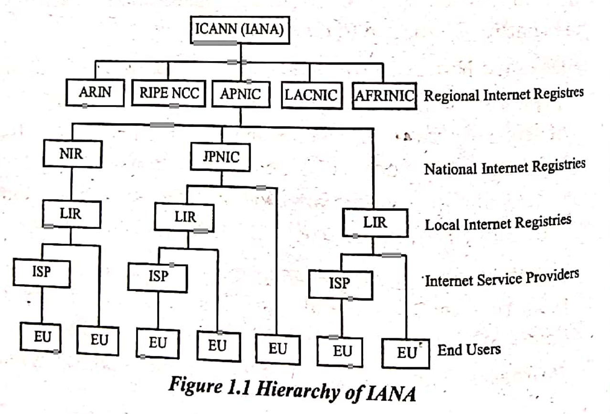

I AND I
CHAPTER 1
Definition of Autonomous System (AS):
An Autonomous System (AS) is a collection of IP networks and routers that operate under the control of a single administrative entity and share a unified routing policy.
- It is identified by a globally unique number called an Autonomous System Number (ASN), which is used in routing protocols to distinguish it from other ASes.
IANA
oversees the global IP allocation,AS no allocation,rootzone mgmt in DNS and Internet numbers.Internet numbers include IP address,AS numbers,Protocol Numbers*(Protocol 6: TCP)* ,Port Numbers.
Functions Of IANA:
IP Address Allocation: Allocates IP address blocks to regional internet registries (RIRs).
DNS Root Zone Management: Manages the DNS root zone, ensuring the stability of the domain name system.
Protocol Parameter Assignment: Maintains protocol numbers and parameters as defined by technical standards (e.g., port numbers).
Management of Internet Numbers: Coordinates globally unique identifiers, such as Autonomous System Numbers (ASNs).
DNS Root Zone Management
The DNS Root Zone Management refers to the administration and oversight of the root zone of the Domain Name System (DNS), which is the highest level of the hierarchical DNS system. The root zone is crucial for the operation of the entire internet’s domain name resolution system.
What is the DNS Root Zone?
The DNS Root Zone is essentially the starting point of the DNS hierarchy. It contains information about the top-level domain (TLD) servers, such as:
- Country Code TLDs (ccTLDs): e.g., .uk for the United Kingdom, .jp for Japan.
- Special-purpose TLDs: e.g., .int for international organizations.
- Generic TLDs (gTLDs): e.g., .com, .org, .net, .edu, and newer ones like .tech, .xyz.
ICANN’s Role:
- Non-profit organization overseeing global domain name system (DNS) and IP address allocation.
ICANN
- Ensures stability, security, and interoperability of the internet.
Key Functions of ICANN:
DNS Management: Coordinates the DNS to ensure domain names are mapped correctly to IP addresses.
TLD Management: Oversees Top-Level Domains (TLDs) like .com, .org, .net, and country-specific domains.
IP Address Allocation: Manages global distribution of IP addresses through IANA (Internet Assigned Numbers Authority).
Root Zone Management: Updates and maintains the DNS root zone file, essential for routing domain queries.
Registrar Accreditation: Accredits domain registrars to ensure they follow standards for domain registration.
Security and Stability: Works to ensure the security and resiliency of the internet’s DNS infrastructure.
Hierarchy of IANA
Regional Internet Registries (RIRs)
IANA allocates IP address blocks to Regional Internet Registries (RIRs). There are five RIRs, each serving a specific geographic region:
- ARIN (American Registry for Internet Numbers) – North America.
- RIPE NCC (Réseaux IP Européens Network Coordination Centre) – Europe, the Middle East, and Central Asia.
- APNIC (Asia Pacific Network Information Centre) – Asia-Pacific region.
- LACNIC (Latin America and Caribbean Network Information Centre) – Latin America and the Caribbean.
- AFRINIC (African Network Information Centre) – Africa.
- Role of RIRs: RIRs distribute IP address blocks to Internet Service Providers (ISPs) and large network operators within their regions.
National Internet Registry
Works under the umbrella of RIR and allocates the IP numbers at national level within specified Countries or economic unit.
NIR operate through ASIA Pacific region Under APNIC.
NIR operating are CNNIC(China internet network information center),JPNIC(Japan network information center).
LIR
A Local Internet Registry (LIR) is an organization, typically an Internet Service Provider (ISP) or a large enterprise, that is authorized by a Regional Internet Registry (RIR) to manage and distribute IP address blocks within a specific region. LIRs receive IP address allocations from RIRs and then sub-allocate these addresses to customers or internal networks, ensuring that internet addresses are efficiently distributed within their service area. In addition to managing IP address assignments, LIRs may also handle reverse DNS management, routing policy implementation, and support the IPv6 adoption process.
ISP
An Internet Service Provider (ISP) is a company or organization that provides individuals and businesses with access to the internet.Mercantile first internet company of nepal.

ISP
ISPs operate at different levels based on their role in providing internet services. The main levels of ISPs are:
1. Tier 1 ISPs:
- Definition: These are the top-level ISPs that own and operate the backbone infrastructure of the internet. They have direct access to the global internet backbone and can exchange traffic with other Tier 1 providers without paying for it.
Roles: They provide internet access to other ISPs and manage large-scale internet infrastructure, ensuring the flow of data between regions and countries.
- Owns and operates global internet backbone infrastructure.
- Exchanges traffic directly with other Tier 1 ISPs without paying.
- Provides direct access to the global internet.
- Has large-scale, highly redundant global infrastructure.
- Example: AT&T, NTT Communications, and Level 3 Communications.
2. Tier 2 ISPs:
- Definition: These ISPs have access to the internet backbone through peering agreements with Tier 1 ISPs, but they also purchase bandwidth from Tier 1 providers.
Roles: Tier 2 ISPs serve as intermediaries, providing internet access to smaller ISPs or businesses and offering more localized or regional services.
- Operates on a regional or national level.
- Purchases bandwidth from Tier 1 ISPs for global access.
- Peers with other Tier 2 ISPs for additional connectivity.
- Serves as an intermediary between Tier 1 and Tier 3 ISPs.
- Example: Comcast, , and Vodafone.
3. Tier 3 ISPs:
- Definition: These ISPs are smaller, usually local or regional, and rely on Tier 1 and Tier 2 ISPs for internet connectivity.
Role: Tier 3 ISPs provide internet services directly to consumers, businesses, or smaller networks. They typically do not own extensive infrastructure and may provide broadband, DSL, or fiber internet.
- Focuses on local or regional internet service provision.
- Relies on Tier 1 and Tier 2 ISPs for global internet access.
- Provides broadband or fiber-optic connections to end-users.
- Has limited infrastructure focused on last-mile connectivity.(last mile provider)
- Example: Local cable providers or small regional internet companies.
To operate the backbone infrastructure means to own, manage, and control the core network systems that form the foundation of the internet.
Q.N) How to ISP interconnect?
ISPs are connected through various methods that ensure efficient data flow across the internet. Peering agreements allow ISPs to exchange traffic directly with each other without payment, especially between Tier 1 ISPs, which form the backbone of the internet, and Tier 2 ISPs. Tier 2 and Tier 3 ISPs, often without the infrastructure to connect directly to the global network, typically enter transit relationships, where they pay Tier 1 ISPs for bandwidth to access the internet. Additionally, ISPs interconnect through fiber-optic cables, both undersea for global connectivity and land-based for regional and national traffic. Internet Exchange Points (IXPs) also facilitate these connections by providing physical locations where multiple ISPs can meet and exchange traffic
Internet Backbone
The internet backbone infrastructure refers to the high-speed, high-capacity network of fiber-optic cables, data centers, routers, and switches that form the core of the internet. This infrastructure connects different Internet Service Providers (ISPs), regions, and countries, facilitating global communication and data transfer. The backbone is responsible for carrying vast amounts of data across long distances, ensuring that the internet is fast, reliable, and scalable.
Necessities of Internet Backbone Infrastructure:
- Global Connectivity: Enables seamless communication and access to content across different regions and countries.
- Example: Undersea cables linking continents, such as the SEA-ME-WE 3 cable.
- High-Speed Data Transfer: Facilitates fast transmission of large data volumes with minimal delay.
- Example: Fiber-optic cables enabling smooth streaming of HD and 4K content on platforms like Netflix.
- Scalability: Allows the internet to grow and handle increasing demand as more devices and users come online.
- Redundancy and Reliability: Provides alternative routes to ensure the internet remains operational even if one part of the network fails.
Chapter 2
IP Definition
The Internet Protocol (IP) is a set of rules that allows computers and other devices to communicate over the Internet. It ensures that information sent from one device reaches the correct destination by using a unique set of numbers known as IP addresses
Layers of TCP/IP

Application layer
The application layer provides the way for the user to communicate with the system. Any service running on the host machine that provides the user interface is using the application layer.
Accessing web pages, sending emails ,resolving domain name are examples of application layer.
DNS, FTP, HTTP/HTTPS, SMTP, POP, SNMP, DHCP, SSH & TELNET
Transport Layer
The transport layer communicates with the application layer and receives data from it. After receiving the data from the application layer, the transport layer divides the data into segments and assigns a sequence number to each segment.
- The transport layer uses TCP and UDP protocols for the communication of data.
- TCP is used for connection-oriented service and UDP is used for connectionless service.
- Instead of TCP and UDP, the transport layer also uses SCTP (Stream Control Transmission Protocol) for VoIP calls. SCTP combines the features of both TCP and UDP.
Internet Layer
Internet Protocol (IP) address is used to provide logical transmission of data over a network using best-effort delivery(best-effort delivery means that the IP is not providing any error detecting mechanism) at the Internet layer.
The Internet layer describes protocols for communication which are ARP (Address Resolution Protocol), RARP (Reverse Address Resolution Protocol), ICMP (Internet Control Message Protocol), and IGMP (Internet Group Message Protocol).
Network Access Layer
The network access layer is a combination of the data link layer and the physical layer. It provides the functionality of both the data link layer and the physical layer. The network access layer works based on the MAC address. It creates the frame and converts it into a stream of bits for machine-understandable language.
- The network access layer receives packets from the Internet layer and converts them into frames, then bits, for machine-readable transmission.
- It defines the data transmission format across network media.
IPV4 HEADER FORMAT
IPv4 is a connectionless protocol used for packet-switched networks.IPv4 uses 32-bit addresses.
It has Unicast, broadcast, and multicast style of addresses. IPv4 supports VLSM (Virtual Length Subnet Mask). IPv4 uses the Post Address Resolution Protocol to map to the MAC address. RIP may be a routing protocol supported by the routed daemon

1. Version (4 bits)
Specifies the version of the Internet Protocol. For IPv4, this value is always 4.
2. IHL (Internet Header Length, 4 bits)
Defines the length of the IPv4 header in 32-bit words. The minimum value is 5 (20 bytes), and the maximum is 15 (60 bytes).
3. Type of Service (ToS) / DSCP (8 bits)
Indicates the quality of service for the packet, such as low delay, high throughput, or reliability. It can be used for prioritizing certain packets.
4. Total Length (16 bits)
Represents the total size of the packet (header + data) in bytes. The maximum value is 65,535 bytes.
5. Identification (16 bits)
A unique identifier for the packet, used to reassemble fragmented packets at the destination.
6. Flags (3 bits)
Controls fragmentation:
- Bit 0: Reserved (always 0).
- Bit 1 (DF): Don’t Fragment.
- Bit 2 (MF): More Fragments (indicates more fragments follow).
7. Fragment Offset (13 bits)
Specifies the position of a fragment relative to the beginning of the original packet.
8. Time to Live (TTL, 8 bits)
Limits the packet’s lifetime to prevent infinite loops. It’s decremented by one at each hop; the packet is discarded when TTL reaches 0.
9. Protocol (8 bits)
Indicates the protocol used in the data portion of the packet. For example:
- 1: ICMP
- 6: TCP
- 17: UDP
10. Header Checksum (16 bits)
Used to detect errors in the IPv4 header.
11. Source Address (32 bits)
The IP address of the sender.
12. Destination Address (32 bits)
The IP address of the recipient.
13. Options (variable length)
Optional field for additional features like security, timestamps, or record route. It makes the header size variable.
Limitations of IPv4 header
- Limited Address Space: IPv4’s 32-bit addressing supports only about 4.3 billion unique IPs, insufficient for the modern internet.
- Lack of Security Features: IPv4 lacks built-in encryption or authentication, making it vulnerable to spoofing and other attacks.
- Variable Header Size: The IPv4 header size (20–60 bytes) complicates processing due to optional fields.
- Limited Quality of Service (QoS): The ToS field is inadequate for prioritizing modern network traffic.
- Fragmentation Overhead: Fragmentation at routers adds processing overhead and increases packet loss risks.
- Processing Overhead: Header checksum calculations introduce delays in high-speed networks.
IPV6 HEADER
The IPv6 header is a part of the information sent over the internet. It’s always 40 bytes long and includes details like where data should go and how it should get there. IPv6 is designed to replace IPv4, offering a much larger address space and improved features.

- Version (4-bits) It shows the version of the internet protocol we used, i.e. 0110
- Traffic Class (8-bits) This is an 8-bit field in which 8 bits are divided into two parts. The most significant 6-bit is for the type of service so that the router will get to know about what services need to be provided to the given packet. And for Explicit Congestion Notification (ECN), the least significant 2-bit is used.
- Flow Label (20-bits) This 20-bit is required for maintaining the sequential flow of packets related to a particular communication. This field is also helpful in avoiding the reordering of packets. The source labels the sequence to help the router so that it can identify that a particular packet is related to a specific flow of data. It is generally used for real or streaming media.
- Payload Length (16-bits) This field is used to help the router know how much information is stored in the payload of a particular packet.
- Next Header (8-bits) This field is used to represent the type of extension header or if the extension header is not present then it shows the Upper Layer PDU. The value for Upper Layer PDU is the same as that of values in IPv4.
- Hop Limit (8-bits) Hop limit is a field in a header that stops the header from going into an infinite loop in the network. It works the same as that of TTL in IPv4. When it passes a hop or router its value is decremented by 1. The packet is discarded when it reaches 0.
- Source Address (128-bits) This field provides the address from where the packet originates.
- Destination Address (128-bits) The destination address is the address of the packet’s intended recipient.
Summary of IV4 Limitation AND IPV6 Improvements
| IPv4 Limitation | IPv6 Solution |
|---|---|
| Limited address space | 128-bit addresses (virtually unlimited space) |
| Lack of security | Built-in IPsec support |
| Variable header size | Fixed header size |
| Inefficient routing | Hierarchical addressing with better aggregation |
| Limited QoS | Traffic Class and Flow Label fields |
| Fragmentation overhead | Source-based fragmentation only |
| Address spoofing | Enhanced authentication and encryption |
| Mobility issues | Mobile IPv6 support |
Fragmentation of IPV4 header
IP can support variable size packet format from 20 octets to 65,535 octets. But which packet size should an implementation use?
The Maximum Transmission Unit (MTU) specifies the largest packet size (in bytes) that can be transmitted over a network without requiring fragmentation.
For example, consider a host connected to an FDDI network, which is connected to an Ethernet network. The FDDI(MTU 4478)-connected host may elect to send a 4,478 octet packet, which will fit into an FDDI network, but the packet switch that is attempting to pass the packet into the Ethernet (MTU1500 )network will be unable to do so because it is too large.
The solution adopted by IPv4 was the use of forward fragmentation. The basic approach is that any IP router that is unable to forward an IP packet into the next network because the packet is too large for this network may split the packet into a set of smaller IP fragments and forward each of these fragments. Destination host is responsible to reassemble the packet into original IP packet.
The behavior is managed by a 32-bit field in the IPv4 header, which is subdivided into three sub-fields.

The first sub-field is a 16-bit packet identifier, which allows fragments that share a common packet identifier value to be identified as fragments of the same original packet.
The second sub-field is a 3-bit vector of flags. The first bit is unused. The second is the Don’t Fragment flag. If this flag is set, the packet cannot be fragmented and must be discarded when it cannot be forwarded. The third bit is the More-Fragments-field and is set for all fragments bar the final fragment.
The third sub-field is the fragmentation offset value, that is the offset of this fragment from the start of the original packet’s IP payload, measured in octawords (64-bit units).
Advantage
1. Forward Flow Advantage: The sending host remains unaware of packet fragmentation, and all IP fragment packets continue toward their destination. This creates a streamlined “forward” flow of packets.
2. Efficient Processing and Flexible Delivery: While the fragmenting router bears the processing load, subsequent routers handle fragments without additional overhead. Fragments can take parallel paths and arrive in any order at the destination for reassembly.
When dont fragment bit is set the router if it cannot forward the packet it was expected to generate ICMP with addition of MTU of next hop network.
Fragmentation in IPV6 header
The essential change between IPv4 and IPv6 is that in IPv6 the Don’t-Fragment-bit is always on.
The other change was that the packet identifier size was doubled in IPv6, using a 32-bit packet identifier field.
An IPv6 router cannot fragment an IPv6 packet, so if the packet is too large for the next hop the router is required to generate an ICMP6 Type 2 packet, addressed to the source of the packet with a Packet Too Big (PTB) code, and also providing the MTU size of the next hop. While an IPv6 router cannot perform packet fragmentation, the IPv6 sender may fragment an IPv6 packet at the source.
Problems with fragmentation
- Complicates Routers and End system
- fragmentation is used to create lethal DoS attacks,attacker seding a series of bizarre and unexpected fragments.
RFC’s
A Request for Comments (RFC) is a formal document created by the Internet Engineering Task Force (IETF) that outlines technical specifications, organizational notes and standards relevant to internet and networking technologies, including protocols such as routing, addressing and transport technologies.
RFC is submitted Either for peer review or to convey new concepts and information.
Internet RFCs (Request for Comments) are a series of technical and organizational documents that serve as the foundation for the development and operation of the internet. They are published by the Internet Engineering Task Force (IETF) and related bodies.
Categories of RFCs
-
Informational RFCs:
- Informational RFCs provide general information, insights, or historical context about a particular technology, protocol, or concept. They are not intended to become internet standards.
-
Standards Track RFCs:
- Define protocols or technologies intended for broad implementation as internet standards.
- Standards Track RFCs define protocols, systems, or procedures that are meant to become official Internet Standards after rigorous testing and community review.
Stages of Standardization:
- Proposed Standard Indicates that the protocol or specification is ready for testing and implementation but may evolve.
- Draft Standard: A more refined version that has been implemented and tested by multiple independent parties.
- Internet Standard: The final and stable version of a specification, widely implemented and tested
- Example: RFC 2616 (HTTP/1.1).
-
Experimental RFCs:
- Experimental RFCs describe ideas or technologies that are still in the early stages of development and testing
-
Best Current Practices (BCP):
BCP RFCs provide operational guidance and recommendations for best practices in managing networks or implementing protocols.
-
Historic RFCs:
- Historic RFCs document outdated, obsolete, or superseded protocols and technologies.
RFC Streams
RFCs (Request for Comments) are published under different streams. Each stream has its own purpose, governance, and focus. The RFC Editor manages these streams, ensuring their publication and preservation.
There are four streams of RFC:
- IETF Stream
RFCs in this stream come from the Internet Engineering Task Force (IETF), a key standards organization for internet technologies. Primarily for developing and maintaining internet standards and protocols. Overseen by the Internet Engineering Steering Group (IESG).
- IAB Stream
RFCs in this stream are produced by the Internet Architecture Board (IAB),which provides strategic direction for the internet’s architecture. Managed directly by the IAB.
- Independent Stream
Independent submissions are created by individuals or organizations not directly affiliated with IETF or IAB processes. Document innovative, experimental, or niche topics that may not align with IETF’s work. Overseen by the Independent Submissions Editor (ISE).
4. IRTF Stream
RFCs in this stream come from the Internet Research Task Force (IRTF), which focuses on long-term research related to internet protocols and technologies. Not intended for immediate standardization. Managed by the IRTF Chair with oversight from the IAB
Each stream operates independently but contributes to the broader body of internet documentation. All streams converge at the RFC Editor, which ensures that RFCs, regardless of their origin, are published, maintained, and accessible. Each RFC header identifies the stream it belongs to, helping readers understand its context and purpose.
IPV6
Day 6 | What is IPv6 Address | CCNA | IT Index | Free | CCNA full course
Features of IPV6:
- Increases Address space(128 Bits)
- Simplified Configuration
- Integrated Security (AH: Authentication Header and ESP: Encapsulation security payload in Extension header)
- Compatibility with IPV4
Total group of 8 each of 16 bits each of in hexadecimal Each Hexadecimal is of 4 bits.
FE80:0001:0000:0000:AEFA:0ABC:000B:0AEF
Can be short handedly written as :
**FE80:1::AEFA:ABC:B:AEF ; (**We cannot use double colon twice for different zeros appearing in address)
Network Prefix of IPV6
Day 7| IPv6 Network and Host Address | CCNA | IT Index | CCNA Full course
Starting 64 defines Network prefix and last 64 bits host ID.
Last 64 bits has 48 MAC address Included so no need of ARP. The address format of 64 bits is EUI (Extended Unique Identifier).
How to create 64 bits from 48 bits mac address ?
- Take MAC address
- 7th bit set from 0 to 1
- After 16th bit Fix FFFE
Eg: 1111:2222:3333 be 48 bit MAC address Now,
00010001 flip that 7th bit to 1 so we get,00010011 i.e 1311:2222:3333 (16th bit after flipping) now 16 bit after add FFFE So we get,1311:22FF:FE22:3333 which is 64 bit EUI.
IPV6 Address Spaces:
https://www.youtube.com/watch?v=QnRezw0f_KQ&list=PLhn6wxTEOjSFxbPBdwbu2NG_Q9atKkdln&index=3
- Link local address: FE8X Non Routable in Internet can be discovered in LAN
- Site local address: FECX
- Global Address: 2XXX
- Multicast Address: FFXX
- Anycast
Link Local Address(FE8X)
- Starting 10 bit fixed(FE8 Upto 10 bits)
- Next 54 bit set to 0
- Last 64 bit are used for Customer ID
- Non routable cannot be used with routing algorithm
Site local Address(FECX)
- Starting 10 bit are fixed
- Next 38 bit set to zero
- Next 16 bit are defined as private subnet
- Last 64 bit are customer ID
Global Address(2XXX)
- Starting 3 bits are fixed
- Next 13 bits define TLA(Top level Aggregation)
- Next 8 are reserved for future
- Next 24 bits define the NLA(Next level Aggregation) like ISP
- Next 16 bits define SLA(Site level Aggregation) For representing Organization
- Last 64 bit define Customer ID
Anycast Address
- Used to send packets to the nearest device in a group of devices sharing the same address.
- No specific prefix
- Useful for services like DNS, content delivery networks (CDNs), and load balancing
Unique Local Address
- Has FD00::/8 I.E 8 bits are fixed followed by 0 and last 64 being interface ID
Solicited Node Multicast Address
- Take the last 24 bits of the Interface ID
- Combine the prefix FF02::1:FF with this bits and add last 24 bits
- All-Nodes Multicast Address:
FF02::1(all nodes on the link). - All-Routers Multicast Address:
FF02::2(all routers on the link).
IPv4-Mapped IPv6 Address:
- Represents an IPv4 address in an IPv6 format for compatibility.
- Format:
::FFFF:<IPv4 address>(e.g.,::FFFF:192.0.2.1).
IPv4-Compatible IPv6 Address (Deprecated):
- Previously used for transitioning from IPv4 to IPv6.
- Format:
::<IPv4 address>(e.g.,::192.0.2.1)
Q.N) The question asks for the generation of various IPv6 addresses and identifiers based on the given MAC address: 02:1A:23:B2:45:A4
- 64-bit Interface ID:
00:1A:23:FF:FE:B2:45:A4 - Link-Local Address:
FE80::001A:23FF:FEB2:45A4 - Unique Local Address:
FD00::001A:23FF:FEB2:45A4(example withFD00::/8) - Solicited-Node Multicast Address:
FF02::1:FFB2:45A4
Chapter 3
Components of Mail System
- The MUA (email client) is used to compose and send an email.
- The email is submitted to the server via Mail Submission (MSA), which forwards it to the MTA.
- The MTA routes the email to the recipient’s mail server using SMTP.
- The recipient’s MDA delivers the email to their inbox on the mail server.
- The recipient accesses their email using Mail Access protocols like IMAP, POP3, or webmail.
SMTP
Application layer protocol
Use process store and forward
Client who want to send open TCP connection to SMTP server.
As soon it listens for TCP from client SMTP process initiates connection on port (25).
After establishing connection client process sends mail to server and acknowledges it.
When message arrives at destination server it uses POP or IMAP to download the mail. SMTP is message transfer agent and POP and IMAP are message access agent.
How SMTP (Simple Mail Transfer Protocol) Works
SMTP is the standard protocol for sending emails over the internet. It is used to transfer emails from the sender’s mail server to the recipient’s mail server and between mail servers. Here’s a detailed explanation of how SMTP works:
Key Roles in SMTP:
- Mail User Agent (MUA): The email client (e.g., Outlook, Gmail) that a user interacts with to compose and send an email.
- Mail Transfer Agent (MTA): The server that handles the actual transmission of the email from the sender’s domain to the recipient’s domain.
Steps in the SMTP Process:
1. Email Composition and Submission:
- The user composes an email using an MUA (like an email client or webmail service).
- When the user hits “Send,” the MUA sends the email to the sender’s mail server (SMTP server) using SMTP over port 587 (submission port).
2. Establishing an SMTP Connection:
- The sender’s SMTP server establishes a connection with the recipient’s SMTP server over port 25 (the standard SMTP port for server-to-server communication).
- A three-step handshake occurs between the servers:
- HELO/EHLO Command: The sender’s server identifies itself to the recipient’s server.
- The recipient’s server responds, acknowledging the sender’s request.
- Both servers agree to proceed with the transfer.
3. Mail Transfer:
- The sender’s SMTP server sends the email in a specific format:
- MAIL FROM: Specifies the sender’s email address.
- RCPT TO: Specifies the recipient’s email address.
- DATA: The actual content of the email, including the header (e.g., Subject, Date) and body (the email message itself).
- The recipient’s server acknowledges receipt of the email with a 250 OK status message.
4. Recipient Domain Lookup (DNS):
- If the recipient’s domain is not on the sender’s server, the sender’s SMTP server queries the Domain Name System (DNS) for the recipient’s mail server’s IP address (MX record).
- Once the IP is resolved, the email is forwarded to the appropriate SMTP server.
5. Mail Queueing and Delivery:
- If the recipient’s SMTP server is not reachable:
- The sender’s SMTP server queues the email and retries sending at regular intervals.
- Once the recipient’s SMTP server receives the email:
- It stores the message in the recipient’s mailbox, managed by the Mail Delivery Agent (MDA).
POP: Pop works mostly on port 110.
**IMAP:**IMAP uses port number 143.

FTP(File transfer Protocol)
File Transfer Protocol (FTP) is a network protocol for transmitting files between computers over TCP/IP connections. Within the TCP/IP suite, FTP is considered an application layer protocol.
Working of FTP
FTP connection needs two parties to establish and communicate on the network. To do that, users need to have permission by providing credentials to the FTP server. Some public FTP servers may not require credentials to access their files. The practice is common in a so-called anonymous FTP.
Two channels in FTP:
Control Channel: Initiates the instruction and response. TCP connection port for FTP server is 21.This connection is used by Control process also called Protocol Interpreter.
Data Channel: Distribution of data happens here. Connection is established between Data transfer process of client and server. Port 20 is used. Closes when files are transferred.. During file transfer client must define type of file to be transferred ,data structure used.
Working in Active and Passive Mode:
In Active mode:
- The client initiates a control connection to the server (port 21).
- The server initiates a data connection back to the client on a random port (typically >1024).
Problem:
- Firewalls and NAT devices often block incoming connections to the client unless explicitly allowed.
In Passive mode:
- The client initiates the control connection to the server (port 21) as usual.
- The server opens a random port for the data connection and informs the client.
- The client then initiates the data connection to the server on this random port.
Benefits:
- No inbound connections to the client are required, which avoids firewall/NAT restrictions.
- The client maintains control over both connections, making it easier to traverse NAT or firewall configurations.
Modes of Data transmission
Stream Mode: It is default, Data is sent as a continuous stream of bytes. If data is in file structure no EOF is needed. If in record structure each record has 1 byte EOR and each file has 1 byte EOF character. Best for networks with stable connections and files requiring minimal processing.
Block mode :
Data is divided into blocks, and each block is sent with a header containing control information. Each block has 3 bytes header, first block descriptor, second and third defines size of block in bytes. Used in systems where reliable data transfer is critical or where interruptions are likely.
Compressed Mode:
Data is compressed ,compression method used is Run Length Encoding. Useful for transferring large text files or data over low-bandwidth networks.
| Aspect | Thin Client | Thick Client |
|---|
| Definition | A client device that relies on a central server for processing and storage. | A client device capable of performing most processing locally, with minimal reliance on a server. |
|---|
| Processing | Minimal processing is done on the client; most tasks are handled on the server. | Most processing is performed locally on the client device. |
|---|
| Storage | No or limited local storage; relies on the server for storing data and applications. | Stores data and applications locally on the client device. |
|---|
| Dependency | Highly dependent on the server for functionality. | Less dependent on the server; can operate independently for most tasks. |
|---|
| Hardware Requirements | Requires lightweight hardware (low CPU, RAM, storage). | Requires powerful hardware (higher CPU, RAM, storage). |
|---|
| Software Requirements | Runs minimal software (e.g., an OS and remote access tools). | Runs full software suites, including operating systems and applications. |
|---|
| Network Dependency | Needs a constant and reliable network connection to function. | Can function offline; network is needed only for specific tasks (e.g., syncing). |
|---|
| Examples | Virtual Desktop Infrastructure (VDI), Citrix Receiver. | Desktop PCs, laptops running standalone applications. |
|---|
| Cost | Cheaper due to minimal hardware and software requirements. | More expensive because of advanced hardware and software. |
|---|
| Performance | Performance depends on server capacity and network speed. | Performance is self-contained, depending on local resources. |
|---|
| Use Case | Environments requiring centralized management, like schools, offices, or call centers. | Environments requiring high local processing, like gaming, video editing, or standalone application development. |
|---|
Multiprotocol
Multiprotocol support refers to a system, software, or device’s capability to handle and communicate using multiple communication protocols.
Multi-Protocol Label Switching (MPLS) is a high-performance routing technique used in modern networking to speed up and manage traffic flows across wide area networks (WANs). It operates by forwarding packets based on labels instead of IP addresses, making routing decisions faster and more efficient.
How MPLS Works:
- Ingress Router:
- The first router in the MPLS network assigns a label to the incoming packet based on its destination or other criteria.
- Label-Switched Routers (LSRs):
- They assign packet to Forward Equivalence Class(FEC) And then Label switched packet(LSP).
- Intermediate routers forward the packet based on the label without looking at the IP header.
- Egress Router:
- The last router removes the label and forwards the packet to its destination using traditional IP routing.
Key Components of MPLS:
- Label:
- A short identifier added to the packet by the ingress router.
- Contains information like LSP, QoS priority, and forwarding equivalence class (FEC).
- Label-Switched Path (LSP):
- A unidirectional path defined by labels from ingress to egress router.
- Forwarding Equivalence Class (FEC):
- A group of packets that are treated the same way by the MPLS network, based on criteria like destination or service type.
- Label Distribution Protocol (LDP):
- Protocol used to distribute labels between routers.
Benefits of MPLS
- Scalability
- Improved bandwidth Utilization
- Improved Uptime
- QoS quality of service to prioritize traffic ensuring better performance for data like VoIP or video stream.
QUIC protocol
By replacing TCP with UDP and encrypting most of its payload, QUIC reduces the time it takes to start viewing the content two to three times, while maintaining data security. QUIC was developed by Google (runs on Chrome & Opera) and was designed to compensate for HTTP/2 deficiencies.

Unlike TCP, which stops everything to recover lost data, QUIC manages errors at the individual stream level. For example, if one stream (like a favicon request) has an error, other streams can keep working without being delayed. This makes QUIC faster and more efficient, especially on unreliable networks, because data can continue flowing while only the problematic stream is fixed.
QUIC also improves speed by encrypting each packet separately, so partial packets don’t cause delays in processing. With QUIC, all these processes—like encryption and error handling—are optimized and completed in a single handshake, reducing latency and increasing performance.
Chapter 4
HTTP
- Hypertext Transfer Protocol (HTTP) is an application-layer protocol for transmitting hypermedia documents, such as HTML
- HTTP follows a classical client-server model, with a client opening a connection to make a request, then waiting until it receives a response from the server. HTTP is a stateless protocol, meaning that the server does not keep any session data between two requests, although the later addition of cookies adds state to some client-server interactions.
Working Of HTTP
- Client initiates TCP connection at port 80
- TCP Three-Way Handshake:
- The client and server establish a TCP connection using the Three-Way Handshake:
- The client sends a SYN packet.
- The server responds with a SYN-ACK packet.
- The client replies with an ACK packet.
- Once this handshake is complete, the TCP connection is established.
- The client and server establish a TCP connection using the Three-Way Handshake:
- HTTP Request Sent Over TCP:
- After the TCP connection is ready, the client sends the HTTP request (e.g.,
GET,POST) to the server over this connection.
- After the TCP connection is ready, the client sends the HTTP request (e.g.,
- HTTP Response Sent Over TCP:
- The server processes the request and sends back an HTTP response (e.g.,
200 OK,404 Not Found) over the same TCP connection.
- The server processes the request and sends back an HTTP response (e.g.,
- TCP Connection Persistence (Optional):
- If HTTP/1.1 or later is used, the TCP connection is often kept open (persistent connection) for multiple HTTP requests and responses, reducing the overhead of establishing new TCP connections.
- If the
Connection: closeheader is included, the TCP connection will be closed after the response.
HTTP Headers
1. Request Headers
- Provide information about the client and its request.
- Examples:
- Host: Server’s domain name.
- User-Agent: Client software details.
- Accept: Supported response formats.
- Authorization: Authentication credentials.
- Cookie: Sends stored cookies.
2. Response Headers
- Provide information about the server’s response.
- Examples:
- Content-Type: Type of response data (e.g.,
text/html). - Content-Length: Size of response body.
- Set-Cookie: Sets cookies for the client.
- Cache-Control: Caching policies.
- Server: Server software details.
- Content-Type: Type of response data (e.g.,
3. General Headers
- Apply to both requests and responses; not specific to the body.
- Examples:
- Date: Timestamp of the message.
- Connection: Connection management (e.g.,
keep-alive).
4. Entity Headers
- Provide metadata about the message body.
- Examples:
- Content-Encoding: Compression type (e.g.,
gzip). - Content-Language: Language of the content.
- Content-Disposition: How to handle the content (e.g., download).
- Content-Encoding: Compression type (e.g.,
5. Custom Headers
- User-defined headers for specific application needs.
- Example:
X-Custom-Header: CustomValue
Persistent and Non Persistent Connection
1. Non-Persistent Connections
-
Definition: A new TCP connection is established for each HTTP request-response pair. Once the server sends the response, the connection is closed.
-
Steps:
- Client establishes a TCP connection with the server.
- Client sends an HTTP request.
- Server processes the request and sends the response.
- TCP connection is closed.
- If another resource is needed (e.g., an image or stylesheet), a new connection is opened.
There are two types:
1. Non-Persistent-Without parallel connection: Each objection takes two RTTs (assuming no window limit) one for TCP connection and the other for HTTP image/text file.
2. Non-Persistent-With parallel connection: Non-Persistent with a parallel connection requires extra overhead in transferring data.

Persistent Connections
- Definition: A single TCP connection is reused for multiple HTTP request-response pairs, reducing the overhead of repeatedly establishing connections.
- Steps:
- Client establishes a TCP connection with the server.
- Client sends multiple HTTP requests over the same connection.
- Server processes each request and sends responses over the same connection.
- Connection remains open for additional requests or is explicitly closed.
1. Non-Pipelined Persistent Connection: In a Non-pipeline connection, we first establish a connection that takes two RTTs then we send all the object’s images/text files which take 1 RTT each (TCP for each object is not required).
2. Pipelined Persistent Connection: In Pipelined connection, 2RTT is for connection establishment and then 1RTT(assuming no window limit) for all the objects i.e. images/text.

HTTP Request Methods
GET: Retrieve a information from server using URI contains Status line, header, empty line (separate header from message body) and message body.
HEAD: message contains status line and header only
POST: Send data to server like form data, file upload. Server response contain status line, header, empty line and message body.
PUT: Request server to store included body at location specified by given URI.
DELETE: Request server to delete a file at given URI
CONNECT: Used to establish network connection to web server over HTTP.
TRACE: Content of request message to web client used as debugging tool.
OPTIONS: Used to find out HTTP Methods and other option supported by web server.
Web servers


Remaining biccha ko part has been skimmed off by me from manual and needs to be Rewritten and restudied. BRD ko assessment ko lagi time nabhara i skipped them off.
AJAX (Asynchronous JavaScript and XML)
AJAX is a set of web development techniques used to create dynamic, interactive web applications. It allows web pages to retrieve data from a server asynchronously (in the background) without refreshing the entire page. This enables web applications to update only the relevant parts of a page without reloading it.
How AJAX Works:
- User Interaction: The user interacts with a webpage (e.g., clicks a button, submits a form), which triggers an AJAX request.
- AJAX Request: JavaScript creates an
XMLHttpRequestobject and sends a request to the server in the background. - Server Response: The server processes the request and sends back the required data (e.g., JSON, XML, HTML) without refreshing the page.
- Update the Webpage: JavaScript updates the relevant parts of the webpage with the server’s response, without reloading the entire page.

Why AJAX is different?
AJAX (Asynchronous JavaScript and XML) is different from traditional web development because it allows web pages to send and receive data from a server asynchronously, meaning the page doesn’t need to reload. It enables partial page updates, improving user experience by keeping the page interactive while only refreshing the necessary parts of the page.


Advantages
- Improved User Experience: AJAX allows parts of a web page to update dynamically, improving responsiveness and interactivity without requiring full page reloads.
- Faster Updates: Since only parts of the page are updated, the user experience feels faster and more fluid.
- Reduced Server Load: Asynchronous requests mean the server can handle multiple requests simultaneously, without waiting for the full page reload.
AJAX Disadvantages:
- Complexity: Managing multiple asynchronous requests and responses can make your code more complex.
- Browser Compatibility: Older browsers may not fully support AJAX or the Fetch API, although this is less of a problem today.
- SEO Concerns: Content dynamically loaded with AJAX may not be indexed by search engines, potentially affecting SEO.
Browser as Rendering Engine
A browser is essentially a software application designed to retrieve, interpret, and display web content, such as HTML, CSS, and JavaScript, from the internet.

- User Interface (UI):
- The UI includes all the elements that a user interacts with, such as the address bar, back/forward buttons, tabs, bookmarks, and the main display area (where the webpage is shown). It’s the visible part of the browser that lets users input URLs, navigate through pages, and access browser settings.
- Browser Engine:
- The browser engine acts as a mediator between the user interface and the rendering engine. It receives user input (e.g., URL or button clicks) and communicates with the rendering engine to display the page. It also handles tasks like processing requests to load new pages or interacting with JavaScript and other resources on the page.
- Rendering Engine (Rendering Engine/HTML Parser):
- The rendering engine is responsible for interpreting the HTML, CSS, and JavaScript and converting them into a visual representation (the web page) that users can interact with. It performs the following tasks:
- Parsing HTML: It converts the raw HTML code into a DOM (Document Object Model) tree, representing the structure of the webpage.
- CSS Styling: The engine applies the CSS rules to the DOM elements to style them accordingly.
- Layout: It calculates the position and size of each element on the page based on CSS properties like margins, padding, and grid/flexbox layouts.
- Painting: It fills in the pixels of each element with the appropriate visual properties (color, borders, etc.).
- Compositing: After the elements are painted, they are combined into layers and presented to the user.
- JavaScript Engine (V8, SpiderMonkey, etc.):
- The JavaScript engine executes JavaScript code embedded in the page. This engine interprets or compiles JavaScript code into machine code that the browser can run. It enables dynamic interactivity on the page, such as handling button clicks, form submissions, animations, or making asynchronous requests (AJAX). Browsers use different JavaScript engines; for instance, Google Chrome uses V8, while Mozilla Firefox uses SpiderMonkey.
- Networking:
- The networking component handles all network-related tasks, such as sending requests to the server (HTTP requests) and retrieving resources like HTML, CSS, JavaScript, images, and videos. It handles protocols like HTTP and HTTPS to communicate with web servers.
- Data Storage:
- Browsers have various mechanisms for storing data locally. This includes cookies (small pieces of data stored by websites), local storage (key-value pairs for persistent data), and IndexedDB (a more advanced way to store large amounts of structured data for web apps).
- UI Backend (Optional):
- The UI backend is responsible for drawing basic elements like widgets and buttons. This component uses the operating system’s UI services and libraries (like Windows, macOS, or Linux) to render the UI.
Flow of Rendering a Page:
- The browser engine receives the URL from the user and sends a request via the networking component.
- The server responds with the HTML, which is passed to the rendering engine.
- The rendering engine parses the HTML, applies CSS styles, and executes JavaScript, building the visual representation (DOM, CSSOM, and Render Tree).
- The JavaScript engine runs any embedded or external scripts.
- The rendering engine lays out the page, paints it, and composites the layers for final display.
- The browser finally renders the fully styled and interactive page to the user interface for the user to interact with.
Web hosting and its types
- Shared Web Hosting:
- In shared web hosting, multiple websites are hosted on the same server, sharing its resources (such as CPU, memory, and bandwidth). It’s the most cost-effective option since the server’s maintenance and resources are distributed among many users. However, this means performance can be affected if other sites on the server use a lot of resources.
- Advantages:
- Affordable
- Easy to set up
- Ideal for small websites or personal blogs with low traffic
- Disadvantages:
- Limited resources (CPU, memory, bandwidth)
- Lower performance and security due to sharing resources with other sites
- Less control over server settings
- Dedicated Hosting:
- With dedicated hosting, a client rents an entire server exclusively for their website. This gives them full control over the server’s resources, such as storage, CPU, memory, and software configurations. It’s ideal for large businesses or websites with high traffic that require more power, security, and customization.
- Advantages:
- Full control over server resources and configurations
- High performance with no resource sharing
- Enhanced security and reliability
- Disadvantages:
- Expensive
- Requires technical expertise to manage the server
- Overkill for small websites or those with lower traffic
- Virtual Private Hosting (VPS - Virtual Private Server):
- VPS hosting is a step up from shared hosting. In VPS, a physical server is divided into multiple virtual servers, each with its own operating system, resources (CPU, RAM, disk space), and configurations. Though you share the physical server with other users, you have more control and guaranteed resources.
- Advantages:
- More control and flexibility compared to shared hosting
- Dedicated resources, ensuring better performance
- More affordable than dedicated hosting
- Disadvantages:
- More expensive than shared hosting
- Still shares a physical server with others, so performance could still be affected by other users
- Requires some technical knowledge to manage
Virtual Hosting allows multiple websites to share a single physical server. With virtual hosting, the server’s resources (CPU, memory, storage) are shared, but each website appears to have its own dedicated hosting environment.
Virtual Hosting allows multiple websites to share a single physical server. With virtual hosting, the server’s resources (CPU, memory, storage) are shared, but each website appears to have its own dedicated hosting environment. This helps save costs while enabling multiple domains to be hosted on the same server. There are three primary types of virtual hosting: port-based, name-based, and IP-based.
- Port-Based Virtual Hosting:
- In port-based virtual hosting, multiple websites are hosted on the same IP address, but each website is assigned a unique port number. The server differentiates requests based on the port number specified in the URL.
- Example:
http://example1.com:8080http://example2.com:8081
- The port number is included in the URL to specify which website the user is trying to access. This approach is rarely used because users typically don’t include port numbers in their browsers, and it can lead to confusion.
- Advantages:
- Allows multiple sites on the same server without needing extra IP addresses.
- Disadvantages:
- Users have to specify a port number in the URL, which is not ideal for a seamless user experience.
2)Name-Based Virtual Hosting:
- Name-based virtual hosting is the most common and widely used method. In this method, multiple websites are hosted on the same server, using the same IP address. The server differentiates between the websites based on the hostname (domain name) sent in the HTTP request header.
- For name based virtual Hosting HTTP/1.1 supported webrowser is needed that to include tarfer hostname in request.
- When a request is made to the server, the domain name (e.g.,
example1.com) is included in the request, and the server uses this information to direct the request to the appropriate website. - Example:
http://example1.comhttp://example2.com
- Both websites can share the same IP address, and the server uses the domain name to route the request to the correct website.
- Advantages:
- Cost-effective (multiple websites can share the same IP address).
- Easy to manage and configure.
- Users don’t need to enter port numbers.
- Disadvantages:
- Not ideal for SSL (Secure Socket Layer) certificates in older systems, as SSL requires a specific IP per domain for proper encryption. However, newer solutions like SNI (Server Name Indication) can resolve this issue.
- IP-Based Virtual Hosting:
- In IP-based virtual hosting, each website hosted on the server is assigned a unique IP address. The server differentiates between the websites based on the IP address in the request.
- For example:
http://192.168.1.1(forexample1.com)http://192.168.1.2(forexample2.com)
- Each website has its own IP address, even though they reside on the same physical server.
- Advantages:
- Each domain gets its own IP address, making it ideal for SSL certificates, as each domain can have a separate IP address for secure connections.
- More flexibility in handling requests.
- Disadvantages:
- Requires more IP addresses, which can become expensive or limited (especially with IPv4).
- Less efficient than name-based hosting due to the need for unique IP addresses for each site.
Document Object Model (DOM)
The Document Object Model (DOM) is an essential concept in web development that represents the structure of an HTML or XML document in a tree-like format. It provides a way to programmatically access and manipulate the content, structure, and style of a webpage. DOM is inteRface that allows developers to interact and modify the content of webpage dynamically using language like JS.
- Tree Structure:
- The DOM represents a document as a tree of nodes, where each node represents a part of the document. The tree structure starts with a root node (the
<html>element in an HTML document) and branches out to child nodes that represent the document’s elements (e.g.,<head>,<body>,<p>, etc.). - Node Types: In the DOM, every part of the document is a node. Common node types include:
- Element nodes (e.g.,
<p>,<div>) - Text nodes (e.g., the content inside a
<p>tag) - Attribute nodes (e.g.,
class,idin an element) - Comment nodes (e.g., HTML comments)
- Element nodes (e.g.,
- The DOM represents a document as a tree of nodes, where each node represents a part of the document. The tree structure starts with a root node (the
- Tree Navigation and Hierarchy:
- The nodes in the DOM are connected in a hierarchical structure, allowing navigation between parent, child, and sibling nodes. This hierarchical relationship provides a clear way to traverse and manipulate the document.
- Parent node: The node directly above another node in the hierarchy.
- Child node: A node that is nested inside another node.
- Sibling node: Nodes that share the same parent.
- The nodes in the DOM are connected in a hierarchical structure, allowing navigation between parent, child, and sibling nodes. This hierarchical relationship provides a clear way to traverse and manipulate the document.
- Dynamic Representation:
- The DOM is not static; it is dynamic, meaning that it can be modified in real-time through programming. Using JavaScript, developers can change the content, attributes, and structure of the document, which will instantly be reflected on the webpage.
- For example: If you change the content of an element using JavaScript (
document.getElementById('myElement').innerText = 'New Content';), the DOM updates, and the page is automatically re-rendered to show the new content.
- Platform- and Language-Independent:
- The DOM is designed to be independent of the platform and programming language. Although it’s primarily used with JavaScript in web browsers, it can also be accessed and manipulated by other programming languages (e.g., Python, Java, etc.) when working with XML documents.